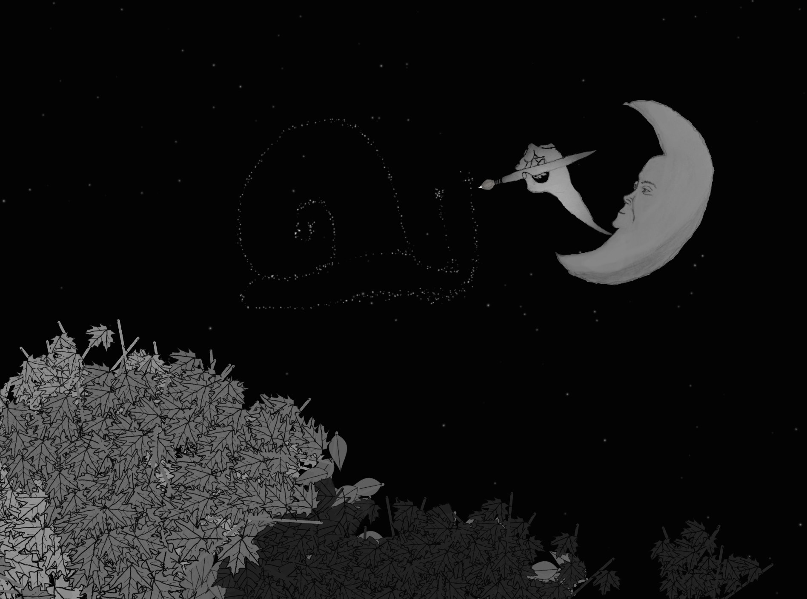

STAR DRAWER
Instructions: Click to draw stars. Best in a dark room.

Some Schlub Scales Sad City (mac download)
A demo level for a procedurally generated 2D platformer, in which you take control of
some schlub and scale the buildings of a sad city. It probably won't work on older computers. :(
IF YOUR COMPUTER TELLS YOU IT'S DAMAGED: It's not. Go System Preferences -->
Security and Privacy --> General --> click the lock --> then under "Allow apps downloaded from"
select "anywhere" and it should work.
STAYCATION

(back)